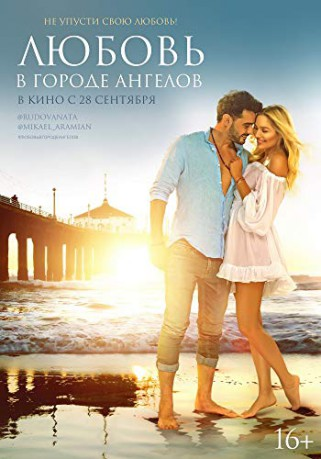

IMDB-Wertung: 4.1 / 10
IMDB-Wertung: 4.1 / 10  Metascore:
Metascore: 
Contemporary Los Angeles. Two jaded and unromantic Russian-Americans - an unlikely match - find love together in the City of Angels.
 IMDB-Wertung: 4.1 / 10 Metascore:
Contemporary Los Angeles. Two jaded and unromantic Russian-Americans - an unlikely match - find love together in the City of Angels.
Jahr: 2017
Dauer: 90 Minuten
FSK: 6
Land: Russland Studio: Lighthouse Home EntertainmentTonspuren: DTS - ,
Untertitel:
Auflösung: 1080p (1920x808) Größe: 6830 MB
Regisseur: Sarik Andreasyan
Drehbuch: Boris Zhumyrtkov
Soundtrack: Mark Dorbskiy
Darsteller:
Datei: X:\2017(A-F)\City of Angels - Verliebt in L.A. (2017, FSK6, 1920x808).mkv seit 01.04.2019
Festplatte: HD 2017(A-Z)-2018(A-F)
 Es gibt insgesamt 152 Filme in der Gruppe '2017(A-F)'
Es gibt insgesamt 152 Filme in der Gruppe '2017(A-F)'